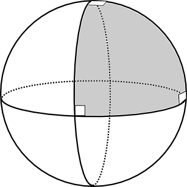
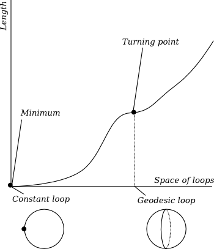
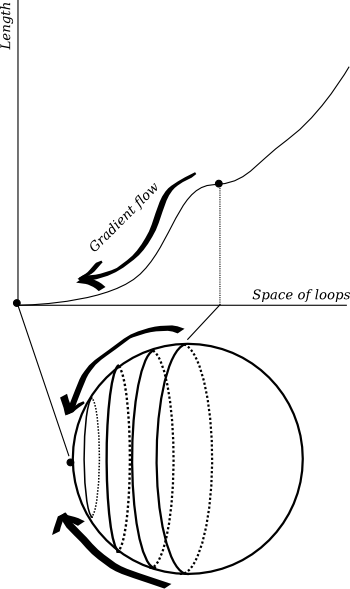
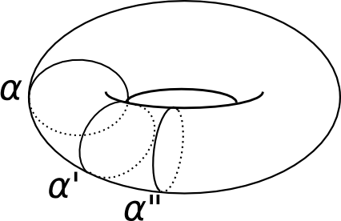
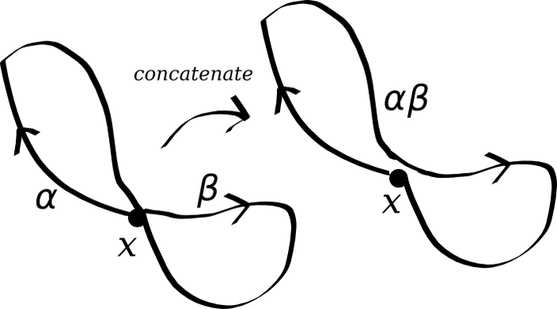

Geometry and undecidability
Geometry and undecidability
These are the notes from a talk I gave to the UCL Undergraduate Mathematics Colloquium in early October and I would like to thank them for being such an attentive audience with so many good questions. The talk is a gentle introduction to the work of Nabutovsky and Weinberger, on how logical complexity gives rise to complexity for sublevel sets of functionals in geometry.
Geometry
The word geometry usually conjures up images of the Ancient Greeks drawing triangles in the sand or doing unspeakable things with circles. But this is flat geometry, Euclidean geometry, and really we're interested in doing geometry on curved spaces. Of course, the Ancient Greeks knew this because they knew that the surface of the Earth is a sphere, and as the word "geometry" translates literally as "Earth-measurement" we will start our discussion by contemplating the geometry of the sphere.

Figure 1: A spherical triangle with three right angles, formed from three geodesics.
Geodesics
The fundamental question, for geometers and airline pilots alike, is what is the shortest path between two points? The answer is a segment of a great circle: a circle on the surface of the sphere which divides it into two equal hemispheres. These curves are called geodesics (from the Greek meaning "Earth-dividing"). As long ago as the first century, the geometer Menelaus realised that you could use these geodesic segments instead of straight lines to do geometry and invented the subject of spherical geometry. This was radically different from Euclidean geometry: for example, in spherical geometry, the sum of angles in a triangle is always bigger than 180 degrees (Figure 1).
Of course, geodesics are not always length-minimising. If a pilot in Heathrow wanted to get to Heathrow, she wouldn't fly all the way around a geodesic till she landed back where she began. Similarly, if she wanted to fly to Lisbon she would go around the geodesic segment that passes over the English channel, not the one passing over the Arctic circle. However, they are always locally length minimising: each short segment minimises distance between its endpoints.
We use the same name, geodesic, for a locally length minimising path in any curved space. A fundamental problem of geometry is to determine the geodesics in a given space. For example, in general relativity, the geodesics in spacetime are the trajectories of particles in free-fall in a gravitational field. For example, the geometry of our solar system is, to some approximation, the so-called Schwarzschild geometry: analysing geodesics in Schwarzschild geometry tells you about the trajectories of planets under the influence of the sun's gravity and allows you to predict the perihelion shift of Mercury. Indeed, when science documentaries tell you about what happens when you fall into a black hole they are paraphrasing statements about the behaviour of geodesics in Schwarzschild geometry.
Writing explicit equations for geodesics (as we can on the sphere) is usually not possible and it is actually remarkable we can say anything about them. But sometimes one can make nontrivial statements about the qualitative behaviour without solving the geodesic equations explicitly. For example, it is sometimes possible to guarantee the existence of a closed geodesic loop, like a great circle on the sphere. This is the question I want to focus on today: when is there a closed geodesic loop in a given curved space?

Figure 2: The length function on the space of all loops has a global minimum at each constant loop and a turning point at each geodesic.
On the sphere we have actually seen two different types. There is the great circle, and there is the constant loop (staying at the same point). Obviously the constant loop minimises length, while the great circle is geodesic but not length-minimising. You should think of this by analogy with critical points of functions, where the derivative vanishes: there are maxima or minima and there are turning points. Indeed, there is a function on the space of loops which assigns to each loop its length (Figure 2). The constant loop sits at a minimum of this function. The great circle sits at a turning point. Of course the space of all loops is infinite-dimensional and finding turning points of functions on infinite-dimensional spaces is harder than the usual problem in single-variable calculus. The condition for being a turning point is that the loop solves the Euler-Lagrange equation.

Figure 3: An elastic band moves along the gradient flow in the space of loops, also known as the harmonic map flow.
You can convince yourself that this picture makes sense by thinking about elastic bands. An elastic band tries to minimise its tension, which is proportional to its length, so it will always seek out a geodesic. You can wrap an elastic band around a sphere, with difficulty, and make it sit precisely on a great circle. But if you perturb it slightly it will shrink and shrink until it pings off and hits someone in the audience (it was a lively talk). If it were bound, magnetically, to the surface of the sphere then it would just go on shrinking down to a single point. In our picture of the length function, we have pushed the elastic band off the turning point and it has fallen down the graph of the length function until it hit the constant loop at the bottom (Figure 2). It always travels down the direction of steepest descent, that is it contracts as efficiently as possible. This means that evolves according to a partial differential equation called the harmonic map flow: just as the heat flow equation describes how a temperature distribution evolves in time, the harmonic map flow governs the contraction of loops to geodesics. These equations are very similar in nature: they are so-called parabolic equations, which tend to smooth out irregularities and converge exponentially fast towards an eventual steady state.
One of the major themes of modern geometry and physics is the study of critical points and gradient flows of functions on infinite-dimensional spaces.

Figure 4: A torus with some topologically nontrivial geodesics.
Geodesics from topology
Now what happens if I use a more interesting space? The surface of a doughnut, for example? This is called a torus and what makes it most interesting is its nontrivial topology. It has a hole in it. We can find loops which wrap around this hole, like the loop \(\alpha\) in Figure 4. It is not possible to shrink \(\alpha\) to a single point whilst staying on the surface of the torus. So suppose I concentrate on those loops which can be obtained by deforming \(\alpha\) and I restrict the length function to those loops. This new function has an interesting minimum at the point \(\alpha\); in fact it has a circle's worth of minima like \(\alpha'\) and \(\alpha''\) in Figure 4 obtained by rotating \(\alpha\) around the torus. If I perturb an elastic band wrapped around \(\alpha\), it contracts back to one of these minima via harmonic map flow.
We obtain interesting closed geodesics whenever there is a loop which cannot be contracted to a point: just flow along the harmonic map flow and you end up with a noncontractible geodesic. Of course you need some hard analysis to prove that properly but, modulo that analysis, we now have a theorem guaranteeing us the existence of closed geodesics: if there is a noncontractible loop then there is a noncontractible geodesic. Of course, there can be different kinds of noncontractible loops in a space, so let us study noncontractible loops more carefully.

Figure 5: Multiplication in the group \(\pi_1(X)\) comes from concatenating loops.
The fundamental group
Fix a point \(x\) in your space \(X\). Consider the set of all deformation classes of loops starting and ending at \(x\). This set is called the fundamental group \(\pi_1(X)\). It is called a group because you can multiply loops: to multiply loops \(a\) and \(b\) starting and ending at \(x\) you just concatenate them (Figure 5). The "inverse" of a loop \(a^{-1}\) is just the loop \(a\) run in reverse.
For example, let \(X\) be the unit circle in the plane: loops in the circle are determined up to deformation by the number of times they wind around. Concatenating a loop with winding number \(a\) and one with winding number \(b\) gives you a loop with winding number \(a+b\). A loop with winding number zero can be contracted to a point. So the fundamental group of the circle is the group of integers: concatenation corresponds to addition.
For the torus it is more interesting: there are two circles to wind around. Let us call one loop \(\alpha\) and one loop \(\beta\). We have the interesting phenomenon that \(\alpha\beta=\beta\alpha\): best illustrated with a picture (Figure 6). So the fundamental group is \(\mathbf{Z}^2\): a loop is completely determined by two winding numbers.
Figure 6: Above: Two loops \(\alpha\) and \(\beta\) generating the fundamental group of the torus. Below: An illustration of how to deform \(\alpha\beta\) to \(\beta\alpha\) whilst fixing the point \(x\).
Our theorem now says: for every element of the fundamental group there is a noncontractible geodesic loop representing that element. CAVEAT: Not quite! As harmonic map flow doesn't preserve the basepoint \(x\) we are only guaranteed a geodesic in each conjugacy class.
Contractible geodesics
We started our discussion with geodesics on the sphere, which were contractible. Indeed these were more subtle and interesting because they were turning points and not minima for the length function. So let me ask:
When can we find (nonconstant) contractible geodesics?
If \(\pi_1(X)\) has undecidable word problem then there are infinitely many contractible geodesics.
Some remarks are in order:
- Having "undecidable word problem" means "being extremely complicated" in a way I shall shortly make precise.
- This theorem is strange: it assumes there are lots of noncontractible loops and outputs lots of contractible geodesics! So what does undecidability mean?
Undecidability
Some problems are undecidable. That is we cannot write a computer program to solve them. This is not just a lack of computing power or ingenuity – we can't write a program to solve them because such a program does not exist in the universe of all computer programs.
The halting problem
What is a computer program? It is a string of 0s and 1s which act as instructions to a computer. Given an input string of 0s and 1s, the program operates on the input and produces output. Two possibilities arise: either the computer program terminates after finite time and returns a string of 0s and 1s or the program goes on for ever and ever and never stops churning. Anyone who has tried computer programming will probably have experienced this and will have banged their heads on the desk trying to work out what went wrong with their code.
It would be nice if we could write a computer program \(A\) which stops this from happening. Maybe we tell \(A\) what program we are running (\(P\)) and what we're going to input (\(I\)) and \(A\) tells us \(A(P,I)=0\) or \(A(P,I)=1\). The output \(0\) means "don't try this or you will be sitting there banging your head on the desk forever" (i.e. program \(P\) will not terminate on input \(I\)); output \(1\) means "yes that's fine" (i.e. program \(P\) will eventually terminate on input \(I\)). It may take a long time, but at least if \(A(P,I)=1\) we can be assured that we will see a result (or maybe our grandchildren's grandchildren will see a result if the computer has to churn for that long).
Unfortunately we don't have such a program, because the halting problem (as it is called) is undecidable. Program \(A\) could never be written. Let's see why. Assume that some clever people have written this amazing program \(A\). Of course their work is patented and closed source, so we don't know how \(A\) works, all we know is what \(A\) does: eats \(P\) and \(I\) and tells us if \(P\) will terminate given input \(I\).
We are naturally suspicious when we hear this, so we decide to write out own program \(B\). \(B\) takes program \(P\) and asks \(A\) "If I fed program \(P\) its own code as input, would it terminate?". If \(A\) says yes (i.e. \(A(P,P)=1\)) then \(B\) goes into an infinite loop; if \(B\) says no (i.e. \(A(P,P)=0\)) then \(B\) finishes and outputs 1. Schematically:
program B(P){
if {A(P,P)==1} then
label C; goto C; # this causes an infinite loop
else
return 1;
}
Now we would like to demonstrate that program \(A\) violates the laws of logic, so we run \(B(B)\). I invite you to contemplate what happens. If your brain remains unfried by this contemplation, you will realise that we must have made a false assumption, and the only assumption we made was the existence of the program \(A\). So \(A\) cannot exist.
This seems like an abstract problem in logic, but there are "real-world problems" in mathematics which are undecidable. For example, for certain groups, the word problem is undecidable…
Word problem
Remember that our fundamental group had a couple of loops which generated it: any loop in the circle can be obtained by iterating the basic loop which wraps around once; any loop on the torus can be obtained by combining the two basic loops \(\alpha\) and \(\beta\) in some way. For example, \(\alpha\beta\alpha^{-1}\beta^{-1}\) is a loop on the torus obtained by concatenating this "word" of loops (going once around \(\alpha\), once around \(\beta\), once backwards around \(\alpha\) and once backwards around \(\beta\)). Now we can simplify this word using the relation we established: that \(\alpha\beta=\beta\alpha\). Take all the $α$s to the left and the $β$s to the right and cancel \(\alpha\alpha^{-1}\) to the "empty word" and \(\beta\beta^{-1}\) to the empty word so we get the empty word overall. This corresponds to not going anywhere at all, i.e. the constant loop.
The word problem: Given a word in the basic loops, can it be reduced to the empty word using the given relations?
Geometrically, can the concatenated loop corresponding to the word be contracted to a point?
Some groups G (see #Col for an explicit example) are sufficiently complicated that you can use multiplication in them to simulate the behaviour of a computer (a "Turing machine"). Then you can translate the halting problem into the word problem for G. So these groups have undecidable word problem: there is no computer program which can determine if the given word can be reduced to the empty word. I won't show you how to build a Turing machine using a group: there is a nice survey paper by John Stillwell #Sti where he discusses such constructions. Instead I'll come back to our theorem:
If \(\pi_1(X)\) has undecidable word problem then there are infinitely many contractible geodesics.
- If there are finitely many geodesics then there exists a list of them. Maybe we're not good enough geometers to actually solve the equations and write the geodesics explicitly, but we can assume that somehow we obtained this list from an oracle who is good enough. Remember, undecidability means that the program we're trying to write cannot be written, not matter how ingenious we are or how many resources we have. Let's assume we have this resource.
- Now given a word, form the corresponding loop.
- Flow this loop down the harmonic map flow until it becomes a geodesic.
- Compare this geodesic with the geodesics on our list. This involves finitely many steps as there are finitely many geodesics. If it appears, we know the geodesic is contractible and hence the word can be reduced to the empty word. If it does not appear then we know the geodesic is not contractible and hence the word canot be reduced to the empty word.
So if there are finitely many contractible geodesics then we can write a computer program to solve the word problem for \(\pi_1(X)\). This is a contradiction so there must be infinitely many contractible geodesics.
Bizarre! Having a really complicated fundamental group means that you get infinitely many contractible geodesic loops.
Some more remarks are in order. First, step 3 of the proof is not so easy to fill in because solving partial differential equations is something nondiscrete: it uses the real numbers instead of integers and computers can only cope with 0s and 1s. So we really need to replace loops and harmonic map flow with some kind of approximations: take a triangulation of our space and approximate the loop with edges of triangles; flowing now means making moves on edges to reduce the length of the loop. It turns out that this step is possible to achieve (in theory) on a computer and this follows from work of Alexander Nabutovsky #Nab (as part of a much deeper, more far-reaching paper).
Second, the fundamental group used loops passing through the basepoint \(x\). Harmonic map flow (or its combinatorial replacement) might not force loops to pass through \(x\), so really we should be working with conjugacy classes of loops in \(\pi_1(X)\). This is OK because undecidable word problem implies undecidable conjugacy problem: deciding if an element is trivial is the same as deciding if it is conjugate to the identity.
Morals
- In geometry we study functions on infinite-dimensional spaces; their critical points and gradient flows. Critical points correspond to geometric objects which are taut or energy-minimising in some sense (like elastic bands) and gradient flows correspond to the evolution of unstable configurations to stable configurations.
- Some problems in mathematics and logic cannot be solved algorithmically.
- Loops in spaces form interesting algebraic structures (like the fundamental group).
- Undecidability of problems in group theory can then be applied to deduce existence theorems for critical points of functions on infinite-dimensional spaces. This has been explored in depth in the work of Nabutovsky and Weinberger, for example see #NabWei, #Wei.
References
[#Col] D. Collins, "On a group embedding theorem of V. V. Borisov" Bulletin of the LMS, Volume 4 (1972) 145 – 147.
[#Nab] A. Nabutovsky, "Disconnectedness of sublevel sets of some Riemannian functionals" Geometric and Functional Analysis, Vol 6 Number 4 (1996) 703 – 725. (Available from Nabutovsky's page.)
[#NabWei] A. Nabutovsky and S. Weinberger, "The fractal nature of Riem/Diff. I" Geometriae Dedicata, Vol 101 (2003) 1 – 54. (Available from Nabutovsky's page.)
[#Sti] J. Stillwell, "The word problem and the isomorphism problem for groups" Bulletin of the AMS, Volume 6, Number 1 (1982) 33 – 56.
[#Wei] S. Weinberger, "Computers, moduli and rigidity" (2005) Princeton University Press.